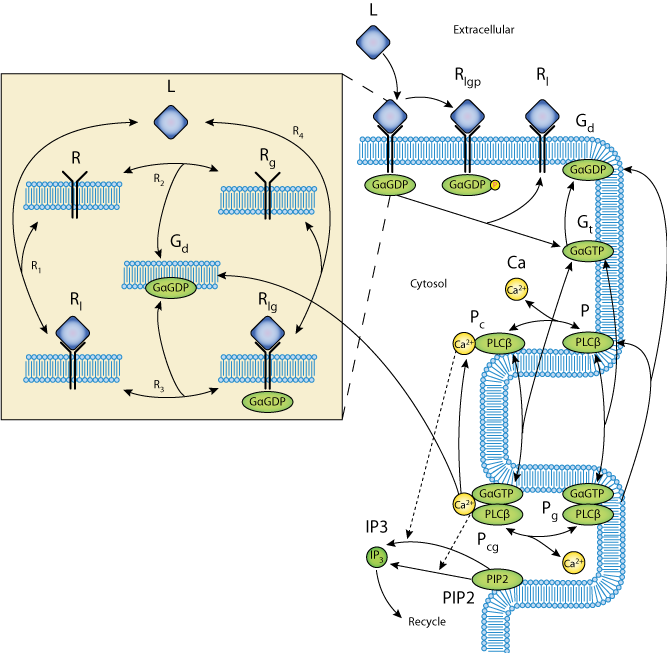

This CellML model is the model which was used to produce the original results in the paper, and therefore it is known to be completely accurate.
ABSTRACT: Cardiac hypertrophy is a known risk factor for heart disease, and at the cellular level is caused by a complex interaction of signal transduction pathways. The IP3 - calcineurin pathway plays an important role in stimulating the transcription factor NFAT which binds to DNA cooperatively with other hypertrophic transcription factors. Using available kinetic data we construct a mathematical model of the IP3 signal production system after stimulation by a hypertrophic {alpha}-adrenergic agonist (endothelin-1), in the mouse atrial cardiac myocyte. We use a global sensitivity analysis to identify key controlling parameters with respect to the resultant IP3 transient; including the phosphorylation of cell-membrane receptors, the ligand strength and binding kinetics to precoupled (with G{alpha}GDP) receptor, and the kinetics associated with precoupling the receptors. We show that the kinetics associated with the receptor system contribute to the behaviour of the system to a great extent, with precoupled receptors driving the response to extracellular ligand. Finally, by reparameterising for a second hypertrophic {alpha}-adrenergic agonist, angiotensin-II, we show that differences in key receptor kinetic and membrane density parameters are sufficient to explain different observed IP3 transients in essentially the same pathway.
Abstract reproduced from Cooling et al., Biophysical Journal 93, 2007, with permission.
This model of the NFAT cycling system is described in more depth in the original paper which is cited below:
Modeling hypertrophic IP3 transients in the cardiac myocyte, Michael Cooling, Peter Hunter and Edmund J. Crampin, 2007, Biophysical Journal, 93, 3421-3433. PubMed ID: 17693463
 Schematic diagram of the model showing the reaction scheme of the IP3 production system. The extracellular ligand (L) binds to receptors (R), whether precoupled with GaGDP (Gd, yielding Rlg) or not (Rl). Fully activated receptors (Rlg) release GaGTP (Gt), which, along with calcium (Ca), stimulates PLCb (P). In the unstimulated state, PLCb-Ca21 (Pc) hydrolyzes PIP2 to produce IP3 via reaction R14. When stimulated, PLCb-Ca21-GaGTP (Pcg) hydrolyses PIP2 at a faster rate via reaction R15. Free IP3 is degraded via reaction R16.
Related models: A more modular version of this model is available at Modeling Biological Modularity with CellML.